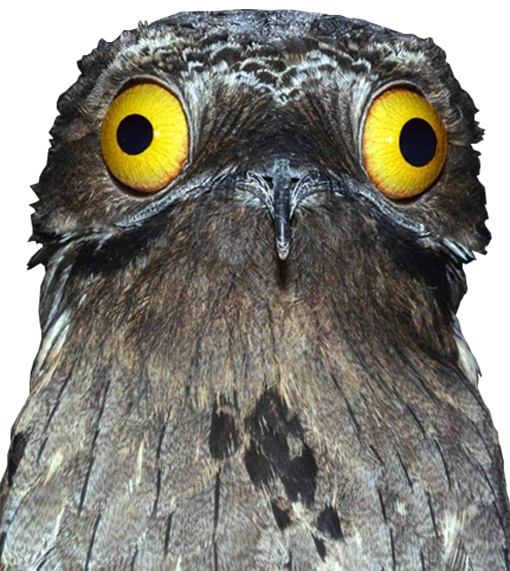
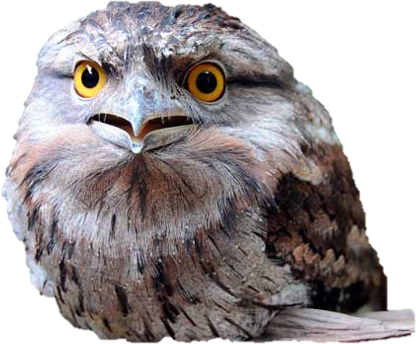
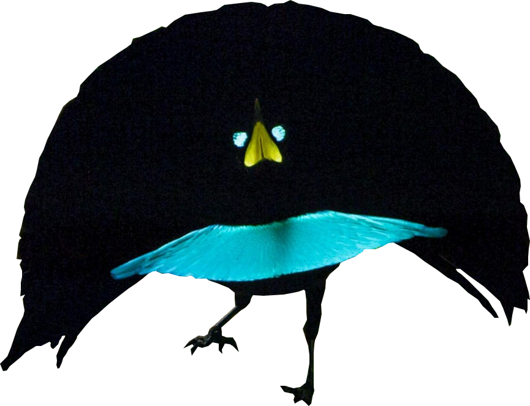
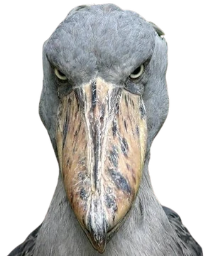
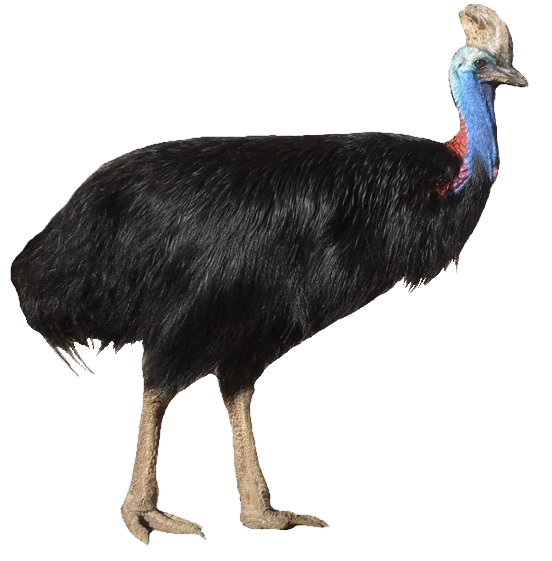

ИСПОЛИНСКИЙ КОЗОДОЙ
Благодаря своему оперению птица может "сливаться" со стволами деревьев и ветками. Внешне козодои напоминают сов, но спутать их тяжело... Огромный клюв, выходящий за уровень глаз, обычно крупные черные зрачки и форма головы - все это разительно отличает его от других пернатых. Благодаря такому строению клюва козодои могут охотиться на насекомых во время полета, а строение глаз отвечает за блестящее ночное видение. Веки глаз имеют строение, каким не сможет похвастаться ни одна птица в мире: даже в закрытом состоянии они образуют маленькое отверстие, позволяющее птице увидеть опасность даже во время сна.
ДЫМЧАТЫЙ ЛЯГУШКОРОТ
Это необычайно редкое в наблюдении существо. Но редкое не потому, что вымирает, а потому что его навыки маскировки совершенны. Окрас животного очень похож на местные породы деревьев, а его форма запросто может имитировать сломанную ветку. Данный пернатый абсолютно уверен в своей маскировке. В отличие от других птиц, козодой не будет ничего делать при приближении нежелательного объекта к месту его стоянки. В результате, птицу можно даже потрогать, но тут-то она уже психанет.
РАЙСКАЯ ПТИЦА
В Новой Гвинее много чудес, но и одно из них не завораживало ученых так сильно, как райские птицы, которых натуралист Альфред Рассел Уоллес еще в XIX веке назвал «самыми необыкновенными и самыми красивыми из пернатых обитателей Земли». Что же так впечатлило старика Уоллеса? Бьющие буквально из подмышек фонтаны нежно окрашенного оперения, переходящие в ажурные струящиеся каскады. Полоски синей гладкой кожи, разделенные черными бархатными дорожками. Свисающие с головы гирлянды из атласных флажков, радужно переливающиеся нагрудные щитки в форме полумесяца. Причудливые хохлы, сережки, вымпелы, ленты, шлейфы, кружевные юбки. Все это — детали нарядов, в которые облачены самцы разных видов райских птиц. В период спаривания самец исполняет особый брачный танец: он полностью расправляет крылья, поднимает хвост, подпрыгивает и машет головой, демонстрируя яркий треугольник на груди.
КИТОГЛАВ
Как вы уже заметили, у китоглава гигантский клюв. San Diego Zoo Wildlife Alliance пишет, что в длину тот достигает 19 см и практически столько же в ширину. Live Science добавляет, что клюв может быть и 0,3 м — у китоглавов третий по величине клюв в мире. Он острый и крючкообразный. Способен отрубить голову жертве хищника. У китоглавов серое оперение, а на голове есть небольшой хохолок. Они вырастают до 1,5 м. Самочки весят 4,9 кг, а самцы — 5,6 кг. При столь мощном клюве и большой голове у птиц тонкие длинные лапы. Китоглавы могут часами стоять в воде, карауля добычу. Они хватают своих жертв и могут проглотить их целиком. Китоглавы доживают до 35 лет в дикой природе. Китоглав способен полакомиться и более крупными жертвами: детеныши крокодилов порой оказываются в пасти сказочной птицы.
КАЗУАР
Эту птицу, которая внешне напоминает гибрид индюка и эму, в 2004 году внесли в Книгу рекордов Гиннеса как самую опасную в мире! Чем же так опасен казуар? Начнем с того, что взрослый представитель царства пернатых достигает от 1,5 м до 2 м в высоту, при этом масса его тела составляет до 60 кг. На континенте это безусловные по своей величине лидеры, а в остальном мире их может заткнуть за пояс только страус. Мощные ноги казуара матушка-природа для пущего устрашения оснастила острыми когтями длиной до 12 см. Пользуясь этим щедрым подарком эволюции, казуар атакует противника, оставляя от него одни кожаные ремни. Но это только присказка к сказке: особая «прелесть» этой птицы заключается в её неконтролируемой агрессии. Если вызвать у казуара недовольство, он обидится и затаит большую злобу, которую не преминет проявить. Непросто придется тому, кто загнал или ранил птицу, которая еще способна оказать сопротивление. Как только она разбежится, горе-охотнику придется удирать от смертельной опасности со всех ног, ведь казуар может развивать скорость до 50 км/ч.